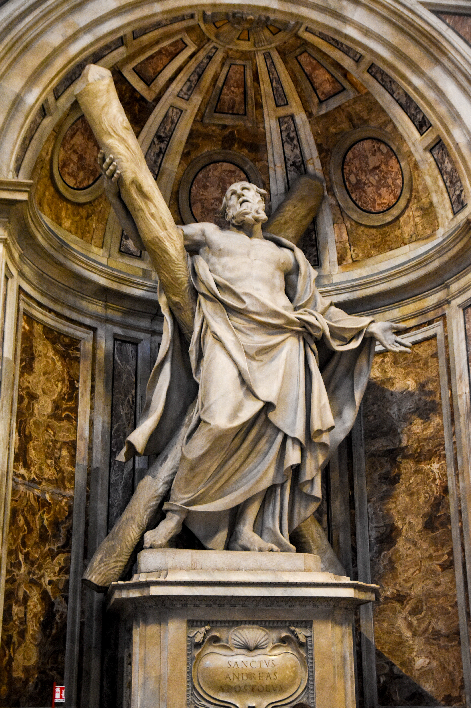
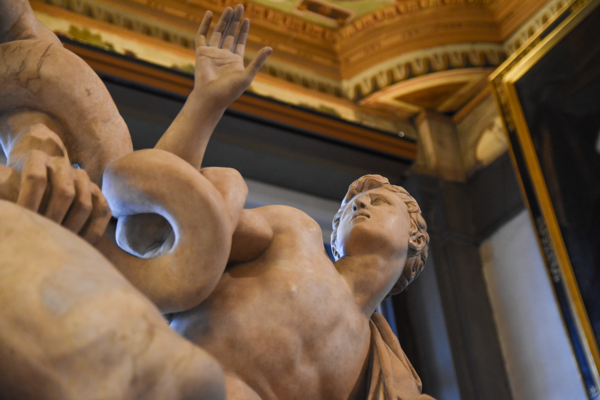
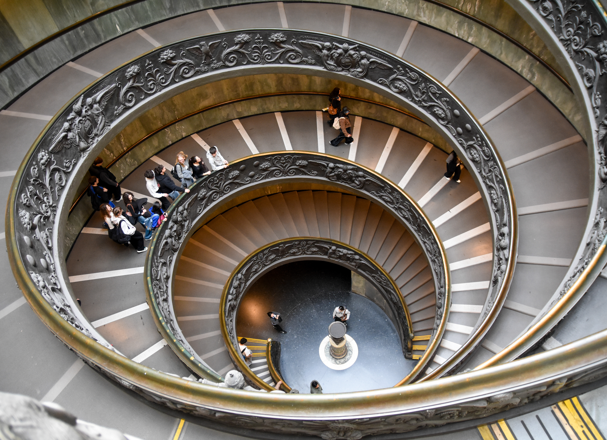
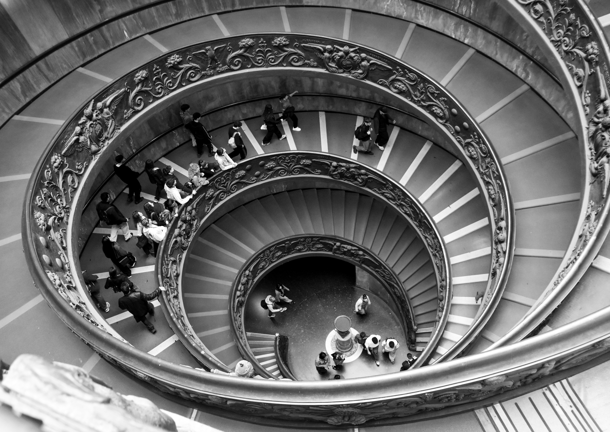
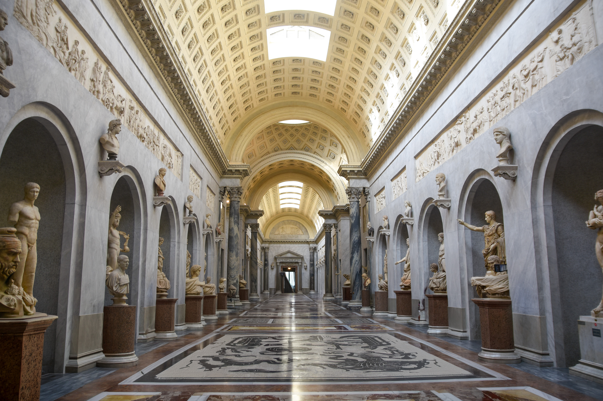

La Mirada Conectada
Capturas de espacio, pausa y perspectiva emocional.
Roma & Florencia: Un viaje entre la luz y la piedra Esta galería reúne una cuidada selección de capturas que celebran la majestuosidad arquitectónica y los detalles íntimos de dos de las ciudades más icónicas de Italia. Desde la imponencia eterna del Coliseo y las colosales columnas vaticanas, hasta el dramatismo clásico de esculturas talladas en mármol y frescos que desafían el tiempo. Entre juegos de luces, callejones misteriosos llenos de historia y la sofisticación del diseño tradicional italiano, cada imagen es una invitación a perderse en los rincones donde el arte y la vida cotidiana se vuelven uno solo.

Arquitectura y eternidad

Espacios en movimiento

Formas Y Marmol

Marmol y Caracol Escaleras del Vaticano
Pausa visual en el camino

El Arte en cada rincon